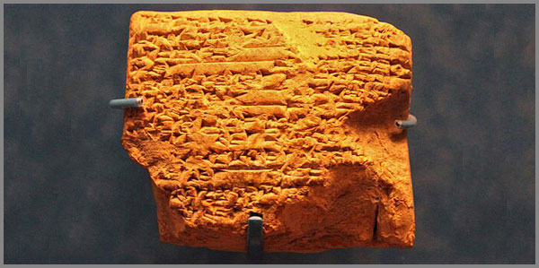

10. Բազմաճաճանչ Իմպուլսի Աղբյուր Արատտան
 |
Լսիր, մտածիր…
Ինչպես մարդու բնական իրավունքներն են ի հայտ գալիս նրա ծննդյամբ և անքակտելի են, այնպես էլ տիեզերքն է իր ծննդյամբ բերում օրենքներ, որոնք անքակտելիորեն կապված են նրա ծննդյան, գոյության և վերարտադրման հետ: Այդ օրենքները հիմնադիր և հիմնարար են: Դրանք անվերապահ են: Դրանք արդեն ավելի քան 13.8 միլիարդ տարի է ինչ աշխարհի ծնեբեկման պահից ի վեր գործում և գործելու են անընդհատ:
Այդ օրենքներից մեկի համաձայն ոչինչ չի անհետանում: Այն, ինչ ծնվել է մի անգամ, շարունակում է ապրել հավերժ: Ոչինչ չի կորում՝ ոչ մի շարժում, ոչ մի ձայն, ոչ մի միտք: Փոխվում է ձևը, փոխվում է տեղը, բայց էությունը մնում է:
Այս օրենքներից մեկը կոչվում է ալիքի տարածման օրենք և այն գործում է ոչ միայն ֆիզիկայում, այլև ամենուր՝ իր միջավայրում:
Հազարավոր տարիներ առաջ, մի վայրում, որը կոչվում էր Արատտա, տեղի ունեցավ մի բան: Մի պահ, մի ակնթարթ, որի ընթացքում զորության հարվածով ծնվեց մի արարման հոսք, մի առաջին շարժում, առաջին միտք, մի կայծ, մի ալիք, որից բռնկվեց ամեն ինչ և որը տարածվելով ու չմարելով, բոլորել սկսեց երկրագունդը բազում ուղղություններով:
Այդ կայծը չմարեց: Այդ ալիքը չմարեց: Այն չէր կարող մարել, որովհետև իմպուլսի պահպանման օրենքը թույլ չի տալիս դա: Այն սկսեց իր ճանապարհը: Անցավ լեռներով, հատեց ծովեր, ճեղքեց դարերը: Հասավ Շումեր և դարձավ 60-ական համակարգ: Հասավ Հունաստան և դարձավ փիլիսոփայություն: Հասավ Հռոմ և դարձավ օրենք: Հասավ Հնդկաստան և դարձավ երաժշտություն: Հասավ Չինաստան և դարձավ 60-ամյա ցիկլ: Հասավ Սկանդինավիա և դարձավ 12 աստվածներ: Հասավ Մայաների մոտ և դարձավ 360-օրյա օրացույց:
Ամենուր, ուր հասավ այս իմպուլսից ծնված ալիքը, թողեց նույն հետքերը: 12: 7: 60: 360: Սրանք պատահական թվեր չեն: Սրանք ստորագրությունն են: Սրանք Արատտայից դուրս հորդած և տարածված քաղաքակրթական իմպուլսից առաջացած ալիքի թողած հետքերն են, հաստատված Արատտայի ստորագրությամբ: Սրանք ապացույցն են, որ աղբյուրը մեկն է:
Այս գործը ճանապարհորդություն է դեպի այդ աղբյուրը: Մենք կգնանք ալիքի թողած հետքերով: Կհետևենք նրա տարածմանը: Կգտնենք նրա թողած հետքերը բոլոր մայրցամաքներում, բոլոր քաղաքակրթություններում, բոլոր դարերում: Եվ կապացուցենք, որ այն, ինչ մինչ այս համարվել է առանձին մշակույթների նվաճումներ, իրականում միևնույն աղբյուրից եկող ճառագայթներ են:
Արատտան չի անհետացել: Այն ապրում է: Ապրում է ամեն 60 րոպեի, ամեն 12 ամսի, ամեն 7-օրյա շաբաթվա մեջ: Այն մեր շնչառության մեջ է, մեր հաշվարկների մեջ, մեր երաժշտության մեջ: Մենք բոլորս Արատտայի զավակներն ենք: Պարզապես մոռացել ենք դա:
Ժամանակն է հիշել:
Գիլգամեշի Ճանապարհորդությունը դեպի հյուսիս՝ անմահության հետևից
Շումերներից մեզ հասած Գիլգամեշի էպոսը մարդկության ամենահին պահպանված գրական ստեղծագործություններից մեկն է: Այն գրվել է մ.թ.ա. 2100 թվականին: Բայց այս էպոսը միայն պատմություն չէ հերոսի և նրա արկածների մասին: Այն Արատտայի ալիքի առաջին գրավոր վկայություններից մեկն է:
Երբ Գիլգամեշը՝ Ուրուկի արքան, կորցրեց իր ընկեր Էնկիդուին, Էնկիդուն մահացավ, նա յոթ օր ու յոթ գիշեր լաց եղավ նրա մարմնի մոտ: Նա չէր ուզում հանձնել ընկերոջը հողին: Նա սպասում էր, որ Էնկիդուն կարթնանա: Բայց Էնկիդուն չարթնացավ: Եվ այդ պահին Գիլգամեշը՝ Ուրուկի արքան, որ երկու երրորդով աստված, մեկ երրորդով մարդ էր, առաջին անգամ իսկապես տեսավ մահը: Տեսավ ոչ թե որպես հեռավոր գաղափար, այլ որպես իրականություն, որ սպասվում է իրեն և որոշեց գտնել անմահությունը: Նա գիտեր, որ միակ մարդը, ով երբևէ ստացել էր անմահություն, դա Ութնափիշտիմն էր, ով փրկվել էր Մեծ Ջրհեղեղից և աստվածների ձեռքից ստացել էր անմահություն:
Եվ Գիլգամեշը գնաց: Գնաց անմահություն գտնելու: Նա թողեց իր արքայական պալատը, իր հսկայական պարիսպները, իր հարճերին ու զինվորներին: Հագավ կենդանիների մորթիներից կարված հագուստ և ճանապարհ ընկավ Ութնափիշտիմին փնտրելու և գտնելու համար:
Ութնափիշտիմը ապրում էր հեռավոր մի վայրում, ուր մահկանացուների ոտքը չէր դիպել: Նրա մասին պատմում էին, որ նա բնակվում է «աստվածների այգում», «երկրի ծայրում», «արևի դարպասների մոտ»: Այս բոլոր նկարագրությունները մատնանշում էին մեկ ուղղություն՝ հյուսիս:
Գիլգամեշը գնաց հյուսիս: Նա անցավ լեռները, որ պահպանում են արևածագն ու արևամուտը: Մտավ խավարի մեջ, որի միջով ոչ մի մահկանացու չէր անցել: Տասներկու ժամ նա քայլեց բացարձակ մթության մեջ, մինչև վերջապես դուրս եկավ խավարից և այնտեղ, լույսի մեջ, նա տեսավ մի այգի: Ծառերը թանկարժեք քարերից էին: Տերևները՝ լաջվարդից: Պտուղները՝ սերդոլիկից ու հասպիսից:
Սա այն նույն ճանապարհն էր, որով դարեր շարունակ պատվիրակները Ուրուկից գնում էին Արատտա: Սա 46° միջօրեականի ուղղությունն էր: Սա այն գիծն էր, որով Արատտայի ալիքը հասել էր Շումեր՝ բերելով 60-ական համակարգը, գիրը, աստղագիտությունը:
Գիլգամեշը գնում էր 46° միջօրեականով դեպի հյուսիս՝ դեպի Արատտա: Նա հետևում էր ալիքի հետքին, վերադառնում էր դեպի աղբյուրը, դեպի այն վայրը, որտեղից եկել էր իմաստությունը:
Գիլգամեշը գտավ Ութնափիշտիմին: Լսեց նրա պատմությունը ջրհեղեղի մասին: Ստացավ անմահության ծաղիկը: Բայց ճանապարհին, երբ նա լողանում էր մի լճակում, օձը զգաց ծաղիկի բույրը, սողոսկեց և գողացավ այն: Գիլգամեշը նստեց և լաց եղավ: Նրա արցունքները հոսում էին այտերով, և նա հասկացավ, որ կորցրել է անմահությունը:
Նա վերադարձավ Ուրուկ: Ոչ թե պարտված, այլ փոխված: Նա նայեց իր կառուցած պարիսպներին և հասկացավ թե ինչումն է իր անմահությունը: Դա ոչ թե հավերժ ապրելն է, այլ այն, ինչ նա պիտի թողնի իրենից հետո: Քար, որի վրա գրված է իր պատմությունը: Քաղաք, որը կանգուն է մնալու դարեր շարունակ: Գիտելիք, որը փոխանցվելու է սերնդեսերունդ:
Գիլգամեշը գնաց հյուսիս՝ անմահություն փնտրելու, բայց գտավ ավելին: Նա գտավ իմաստություն: Նա դարձավ Արատտայից հոսած ալիքներից առաջինի արձանագրված վկաներից մեկը:
Լեզվական հետքեր ամբողջ աշխարհում: «Աս», «Տուն», «Ար» «Հայ» արմատները աշխարհի լեզուներում
Երբ ալիքը իր ակունքից տարածվել սկսեց աշխարհով, այն իր հետ տարավ ոչ միայն թվեր, այլև բառեր: Այս բառերը, ի տարբերություն շատ թվերի, չեն կարող պատահական լինել: Որովհետև թվերը կարող են կրկնվել տարբեր մշակույթներում ինքնուրույն: Բայց բառերը, հատկապես արմատները, ունեն ծագում, ունեն ճանապարհ, ունեն հետագիծ:
Վերցնենք «Հայ» արմատը: Հայերը այդպես են կոչում իրենց: Բայց Շումերում, Արատտայի ալիքի առաջին հանգրվանում, կար մի աստված, որի անունը Հայա էր: Նա իմաստության աստվածն էր, գրի հովանավորը, որի անունը պահպանվել է կավե սալիկների վրա: Այն հայտնվում է Միջագետքում մ.թ.ա. 3-րդ հազարամյակում որպես իմաստության աստծո անուն՝ Հայա: Այն առկա է Հայկական լեռնաշխարհում որպես ժողովրդի ինքնանվանում: Հազարավոր տարիներ անց, Աֆրիկայի սրտում, Վիկտորիա լճի ափերին ապրող մի ժողովուրդ, իրեն կոչում է Հայա իսկ լեզուն Լուհայա: «Հայ» արմատը հայտնվում է Աֆրիկայում որպես ցեղի անուն: Այն հայտնվում է Մոնղոլիայում, Ամերիկայում: Սա չի կարող պատահական լինել: Պատահականությունը չի կարող կրկնել նույն հնչյունային համադրությունը չորս տարբեր մայրցամաքներում: Գիտությունը սա համարում է հնչյունային զուգադիպություն: Բայց ալիքը երբեմն թողնում է հետքեր, որոնք չեն տեղավորվում գիտության շրջանակներում:
Վերցնենք «Աս» արմատը: Աստված, աստղ, արարում: Սկանդինավյան Ասեր, հնդկական Ասուրաներ, հայկական Աստված: Նույն արմատը, նույն իմաստը, նույն սրբազան նշանակությունը: Երեք տարբեր մշակույթներ, երեք տարբեր դարաշրջաններ, մեկ աղբյուր:
Վերցնենք «Ար» արմատը: Արև, արարում, զորություն: Այս արմատը ամենատարածվածն է: Այն կա Հայաստանում, Հնդկաստանում, Պարսկաստանում, Հունաստանում, Կելտերի մոտ, Էտրուսկների մոտ, Ճապոնիայում, Ավստրալիայում, Աֆրիկայում: Այն ամենուր նշանակում է լույս, ուժ, աստվածային սկզբունք:
Վերցնենք «Տուն» արմատը: Հայերենում դա բնակարան է, ապաստան, տեղ, ուր վերադառնում ես: Մայաների մոտ Tun-ը 360-օրյա ցիկլ էր, ժամանակի տունը, տիեզերական ամբողջականությունը: Հազարավոր կիլոմետրեր ու տարիներ են բաժանում Մայաներին Հայաստանից, բայց բառը մնացել է:
Այս արմատները չեն կարող բացատրվել ոչ առևտրով, ոչ պատերազմով, ոչ էլ պատահական զուգադիպությամբ: Առևտուրը չի տարածում աստվածների անունները: Պատերազմը չի տարածում լեզվի արմատները: Բայց ալիքը՝ այո: Այն գալիս է մի աղբյուրից և տարածվում է բոլոր ուղղություններով՝ թողնելով նույն հետքերը բոլոր ափերին և այդ ալիքի ակունքը Արատտան է:
Առաջին ալիքը հասել և հանգրվանել է Շումերում և Բաբելոնում
Լեռներից հոսող ջուրն ունի իր տրամաբանությունը։ Այն փնտրում է ամենակարճ և ամենաարդյունավետ ճանապարհը՝ բարձունքից իջնելու և դաշտավայրը ողողելու համար։ Այդպիսին էր նաև Արատտայից մեկնարկած առաջին քաղաքակրթական ալիքը։ Այն չէր կարող մնալ փակ համակարգում։ Այն ուներ զորություն, որը պիտի հորդեր դուրս։ Եվ այդ հոսքը գնաց ամենաբնական ուղղությամբ՝ 46° միջօրեականի երկայնքով, դեպի հարավ, ուր տարածվում էին Եփրատի և Տիգրիսի արգավանդ հովիտները։
Այդ ամենամաքուր ալիքի առաջին և ամենահզոր հանգրվանը դարձան Շումերն ու Բաբելոնը։
Շումերները, որոնք հանկարծակի հայտնվեցին Միջագետքի պատմության թատերաբեմում, իրենց հետ բերեցին մի համակարգ, որը հիմնովին տարբերվում էր այն ամենից, ինչ կար մինչ այդ։ Դա 60-ական համակարգն էր։ Նրանք ժամանակը բաժանեցին 60 րոպեի, շրջանը՝ 360 աստիճանի, իսկ տիեզերքի կառուցվածքը տեսան 12 գլխավոր աստվածների կամարի ներքո։ Բայց որտեղի՞ց հայտնվեց այս հանճարեղ մաթեմատիկական ճշգրտությունը մի վայրում, ուր մարդիկ նոր էին սովորում ցեխից աղյուսներ թրծել։
Պատասխանը թաքնված է հենց կավե սալիկների վրա գրված տողերի արանքում։ Ինչպես գիտենք, Էնմերկարի պատվիրակը յոթ լեռնաշղթա անցնելով գնում էր Արատտա, և հենց այդ բանակցությունների ժամանակ ծնվեց գիրը։ Շումերը չհորինեց գիտելիքը, Շումերը հանդիսացավ այն հայելին, որն իր վրա վերցրեց Արատտայի կայծի անդրադարձը։ Այն, ինչ Արատտայում սրբազան գիտելիք էր, աստվածային անխառն լույս, Միջագետքի տաք ավազների վրա նյութականացավ, դարձավ կավե սալիկ, դարձավ հաշվարկ, դարձավ պետություն։
Դարեր անց, երբ Շումերին հաջորդեց Բաբելոնը, իմպուլսը չթուլացավ, այլ ստացավ նոր՝ մոնումենտալ դրսևորում։ Բաբելոնի հռչակավոր աշտարակը՝ Էտեմենանկին, որը թարգմանվում է որպես «Երկնքի և երկրի հիմնադրման տուն», կառուցված էր նույն տիեզերական չափումներով։ Դա սովորական շինություն չէր, դա աստղադիտարան էր, որի յոթ աստիճանները (նույն յոթ սրբազան թիվը, նույն յոթ լեռնաշղթաները) տանում էին դեպի երկինք։ Բաբելոնացիները չափում էին աստղերի ընթացքը, կանխագուշակում էին խավարումները և տարին բաժանում էին 12 կենդանակերպի նշանների։ Նրանք կարծում էին, թե իրենք են տիեզերքի կենտրոնը։
Բայց նրանք չգիտեին, որ իրենց հանճարեղ հաշվարկները, իրենց աստղային քարտեզները և ժամանակի 60-ական ընթացքը ընդամենը Արատտայից դուրս հորդած ալիքի առաջին ծփանքներն էին։ Այն, ինչ Բաբելոնում դարձավ աշտարակ, Հայկական լեռնաշխարհում արդեն կանգնած էր Քարահունջի քարե աստղադիտարանի տեսքով։ Առաջին ալիքը հանգրվանեց Միջագետքում, տվեց իր պտուղները, բայց կանգ չառավ։ Իմպուլսը շարունակեց իր ընթացքը՝ այս անգամ շարժվելով դեպի արևմուտք։
Ալիքի տարածումը դեպի արևմուտք՝ դեպի Տրոյա, Հունաստան, Հռոմ
Ալիքը, որ հեղեղել էր Միջագետքի դաշտավայրերը, կանգ չառավ։ Իմպուլսի բնույթն այնպիսին է, որ այն պիտի բոլորի երկրագունդը։ Եվ ակունքից ճառագայթող հաջորդ հզոր հոսքը շարժվեց դեպի արևմուտք՝ անցնելով Փոքր Ասիայի լեռնաշղթաներով և դուրս եկավ դեպի Միջերկրական ու Էգեյան ծովերի ավազան։
Այս ճանապարհի առաջին աշխարհագրական հանգրվանը Տրոյան էր։ Ինչպես արդեն հայտնի է, այն պատահական տեղում չէր կանգնեցված: Այն գտնվում է Արատտայի հետ ճշգրիտ նույն հյուսիսային լայնության վրա՝ 39°57′։ Բայց ալիքը, հասնելով 26° արևելյան երկայնությանը, կատարեց իր մաթեմատիկական շեղումը ճիշտ 20 աստիճանով, ինչը 60-ական համակարգում 60-ի ուղիղ մեկ երրորդն է։ Տրոյան դարձավ այն սահմանային դարպասը, որտեղ Արատտայի աստվածային սրբազան էությունը փոխակերպվեց մարդկային կրքի, իսկ Ինաննայի պատմությունը վերածվեց Հեղինեի պատերազմի։
Տրոյայի պատերը կոտրելով ալիքը հորդեց ավելի արևմուտք՝ դեպի Հունաստան։ Հելլադայի ափերին այս իմպուլսը ստացավ բոլորովին նոր ձևակերպում՝ այն դարձավ փիլիսոփայություն և առասպելաբանություն։ Հույները ստեղծեցին իրենց Օլիմպոսը և այնտեղ բազմեցրին ճիշտ 12 գլխավոր աստվածների, որը և 60-ական համագարգի հիմնական բաղադրիչներից մեկն է և Արատտայի ստորագրություն է։ Դարեր անց հունական հանճարը՝ Պյութագորասը, հայտարարեց, որ աշխարհի հիմքում ընկած են թվերը, և տիեզերքը կատարյալ մաթեմատիկական ներդաշնակություն է։ Նա և նրանից հետո եկած փիլիսոփաները փնտրում էին «Արխեն»՝ տիեզերքի նախասկիզբը, առաջին կայծը։ Նրանք զգում էին ալիքի շարժումը, բայց չգիտեին, որ իրենց փնտրած նախասկիզբը դարեր առաջ արդեն ձևակերպվել էր 46° միջօրեականի վրա։
Արևմտյան ճանապարհը սրանով չավարտվեց։ Ալիքը հատեց Ադրիատիկ ծովը և հանգրվանեց Ապենինյան թերակղզում՝ Հռոմում։ Եթե Շումերում ալիքը դարձել էր հաշվարկ, իսկ Հունաստանում՝ միտք, ապա Հռոմում այն նյութականացավ որպես Կայսրություն և Օրենք։ Հռոմեական իրավունքի հիմքերը դարձան հռչակավոր «Տասներկու տախտակների օրենքները» (Lex Duodecim Tabularum)։ Կրկին նույն 12 թիվը, որպես կայունության, կարգուկանոնի և տիեզերական արդարության երկրային չափում։ Հռոմեացիները կառուցեցին ճանապարհներ, որոնք միավորում էին աշխարհը, և ստեղծեցին օրացույց, որը տարին բաժանում էր 12 ամիսների։
Արևմտյան այս հսկայական աղեղը՝ Տրոյայից մինչև Հռոմի պալատներ, կառուցվեց Արատտայի թողած կմախքի վրա։ Նրանք փոխեցին աստվածների անունները, վերափոխեցին լեզուն, բայց պահպանեցին տիեզերական ծածկագիրը։ Նրանք շարժվում էին արևմուտք, բայց նրանց թիկունքում՝ արևելյան բարձրադիր լեռներում, դեռ տաք էր այն օջախը, որից դուրս էր թռել իրենց քաղաքակրթության առաջին կայծը։
Ալիքը հասնում է Հնդկաստան, Չինաստան, Ճապոնիա
Իմպուլսը չունի սահմաններ և չի ճանաչում արգելքներ։ Մինչ ալիքի մի հզոր ճառագայթը հաղթահարում էր արևմտյան ծովերը, մյուսը Արատտայի ակունքից շարժվեց հակառակ ուղղությամբ՝ դեպի արևելք։ Այն անցավ բարձրադիր սարահարթերով, ճեղքեց Հիմալայների հավերժական ձյուները և հեղեղեց Հեռավոր Արևելքի հնամենի քաղաքակրթությունները։
Այս արևելյան հոսքի առաջին մեծ կանգառը եղավ Հնդկաստանը։ Ինդոս և Գանգես գետերի ափերին Արատտայի իմպուլսը վերածվեց հոգևոր բացարձակ խորության և սրբազան ձայնի։ Հնդկական հնագույն տեքստերում՝ Վեդաներում, աշխարհի արարումը նկարագրվում է որպես տիեզերական առաջին հնչյուն, որն արձագանքում է ամենուր։ Եվ այդ տիեզերական ներդաշնակությունը հնդիկները նյութականացրին երաժշտության մեջ՝ ստեղծելով սրբազան Ռագաները, որոնց հիմքում ընկած է 7 հիմնական նոտաների (սվարաների) և 12 կիսատոների համակարգը։ Նրանց տիեզերագիտության մեջ հայտնվեցին Ասուրաները (կրկին նույն սրբազան «Աս» արմատով), որոնք զորության և արարման կրողներն էին։ Այն, ինչ 46° միջօրեականի վրա աստղային հաշվարկ էր, Հնդկաստանի սրտում դարձավ հավերժական մանտրա և տիեզերական ռիթմ։
Շարժվելով ավելի արևելք՝ ալիքը հասավ Մեծ Հարթավայր՝ Չինաստան։ Այստեղ, ուր մարդիկ սովորում էին ապրել բնության հավասարակշռությամբ, Արատտայի թողած թվային ծածկագիրը ստացավ իր ամենակատարյալ ժամանակային արտահայտությունը։ Չինացիները ստեղծեցին իրենց հռչակավոր տիեզերական օրացույցը, որի հիմքում ընկած է 60-ամյա ցիկլը՝ցզյա-ցզի։ Այս համակարգը, որը բաղկացած է 12 երկրային ճյուղերից և 10 երկնային արմատներից, արդեն հազարամյակներ շարունակ չափում է չինական ժամանակի ընթացքը։ 60-ը պատահական թիվ չէր Շումերում, և պատահական չեղավ նաև Չինաստանում։ Դա նույն ալիքի տարածման անխախտ հետքերից է, որը ժամանակի մեջ դրոշմեց Արատտայի ստորագրությունը։
Արևելյան այս մեծ ճանապարհորդության վերջին հանգրվանը եղավ Ճապոնիան՝ Ծագող արևի երկիրը։ Օվկիանոսի ափին գտնվող այս կղզիներում ալիքը հանդիպեց արևի պաշտամունքին։ Տեղական հնագույն Սինտոիզմ կրոնի հիմքում ընկած է արևի աստվածուհի Ամատերասուի պատմությունը, իսկ տիեզերական կարգը կառուցված է նույն սրբազան «Ար» արմատի ու լույսի զորության վրա։ Ճապոնական ավանդական կոսմոլոգիայում աշխարհը բաժանվում է սրբազան բաժինների, որոնք կրկնում են տիեզերական նույն երկրաչափությունը։
Հնդկաստանից մինչև Ճապոնիա՝ ամբողջ Հեռավոր Արևելքը հյուսվեց միևնույն անտեսանելի թելով։ Նրանք կարող էին չիմանալ լեռնային Արատտայի անունը, բայց նրանք խոսում էին նրա թողած արմատներով, հաշվում էին նրա 60-ական ցիկլերով և աղոթում էին նրա 7 ու 12 թվերի կանոններով։ Իմպուլսը ալիք առ ալիք տարածվում էր ամենուր։
Ալիքը հարավում հասնում է Եգիպտոս և Աֆրիկա
Քաղաքակրթական ալիքի ուժը նրանում է, որ այն չի ընտրում միայն հարթ ու հեշտ ճանապարհներ: Այն հաղթահարում է անապատների անդորրն ու հարավային տաք քամիները: Արատտայի ակունքից ճառագայթած հաջորդ հզոր հոսքը շարժվեց դեպի հարավ՝ անցնելով Միջագետքի վրայով, հատելով Սինայի թերակղզին և հեղեղելով Աֆրիկա մայրցամաքի հնամենի սիրտը:
Այս հարավային ուղղության առաջին մոնումենտալ հանգրվանը դարձավ Նեղոսի հովիտը՝ հանձինս Հին Եգիպտոսի: Այստեղ Արատտայի թողած տիեզերական ծածկագիրը նյութականացավ քարի, ճարտարապետության և ժամանակի կառավարման մեջ: Եգիպտացիները, կառուցելով իրենց հզոր բուրգերը, դրանք կապեցին աստղերի ընթացքի հետ՝ կիրառելով մաթեմատիկական բացարձակ ճշգրտություն: Հենց Եգիպտոսում օրը պաշտոնապես բաժանվեց 24 ժամի՝ ճիշտ 12 ժամ ցերեկվա և 12 ժամ գիշերվա համար: Կրկին նույն 12-ի անխախտ կանոնը, որը եկել էր Արատտայից և դրոշմվել Նեղոսի ափերին: Նրանց սրբազան տեքստերում և արարչագործության միֆերում հայտնվեցին 7 և 12 թվերի համադրությունները՝ որպես տիեզերական կարգի հիմք:
Բայց ալիքը չսահմանափակվեց միայն Եգիպտոսի սահմաններով: Այն շարժվեց ավելի խորք՝ դեպի Աֆրիկայի հասարակածային շրջաններ, և թողեց մի հետք, որը մինչ օրս ապշեցնում է հետազոտողներին: Մայրցամաքի սրտում՝ Վիկտորիա լճի ափերին, բնակություն հաստատեց մի ժողովուրդ, որն ինքն իրեն անվանեց Հայա (Haya), իսկ իրենց լեզուն՝ Լուհայա:
Սա սովորական զուգադիպություն չէր: Աֆրիկայի խորքում ապրող այս ցեղը ոչ միայն պահպանեց «Հայ» սրբազան արմատը, այլև իր հետ տարավ մշակութային յուրօրինակ կոդեր, որոնք Միջագետքում իմաստության աստծո՝ Հայայի անունն էր, իսկ Հայկական լեռնաշխարհում՝ ազգի ինքնանվանումը: Հայա ժողովուրդը հայտնի դարձավ իր վաղ երկաթե դարի զարգացած մետաղագործությամբ: Նրանք ձուլում էին պողպատ հսկայական ջերմաստիճանի տակ՝ օգտագործելով այնպիսի հնարքներ, որոնք Եվրոպայում հայտնվեցին միայն դարեր անց: Որտեղի՞ց նրանց այդ գիտելիքը անտառների ու լճերի մեջ: Դա նույն ալիքի տեխնոլոգիական ու լեզվական կայծն էր, որը հասել էր Աֆրիկայի սիրտը:
Արատտայի հարավային ճառագայթը Եգիպտոսի բուրգերից մինչև Վիկտորիա լճի ափեր դրոշմեց նույն մաթեմատիկական և լեզվական ստորագրությունը: Այն ապացուցեց, որ նույնիսկ հազարավոր կիլոմետրերի հեռավորությունը չի կարող ջնջել այն նախնական իմպուլսը, որը դուրս էր հորդել 46° միջօրեականի բարձունքներից:
Ալիքը տարածվել է նաև հյուսիս, հասնելով Սկանդինավիա
Քաղաքակրթական ալիքի ուժը չունի միայն հարավային կամ արևելյան ուղղություններ: Այն օժտված է բացարձակ թափանցող զորությամբ, որը կարող է հալեցնել նույնիսկ հյուսիսի հավերժական սառույցները: Արատտայի ակունքից ճառագայթած հաջորդ հզոր հոսքը շարժվեց ուղիղ դեպի հյուսիս՝ անցնելով Կովկասյան լեռնաշղթաներով, տարածվել սկսեց Եվրասիական մեծ տափաստաններով և հասավ մինչև Սկանդինավյան թերակղզու խորքերը:
Այս հյուսիսային ճանապարհին Արատտայի իմպուլսը վերածվեց արիության, մարտական ոգու և սրբազան ռունագրերի:
Սկանդինավյան հնամենի առասպելաբանության մեջ աշխարհի կառուցվածքը հիմնված է նույն թվային և լեզվական կոդի վրա: Նրանց գլխավոր աստվածները, որոնց առաջնորդում էր հնագույն իմաստուն Օդինը, կոչվում էին Ասեր: Սա սոսկ զուգադիպություն չէ: Այստեղ կրկին հայտնվում է նույն սրբազան «Աս» արմատը, որը հայերենում նշանակում է Աստված, աստղ և արարում, իսկ հնդկական վեդաներում՝ Ասուրաներ: Սկանդինավյան Ասերը երկնային զորության, կարգուկանոնի և արարման կրողներն էին, որոնք ապրում էին իրենց սրբազան քաղաքում՝ Ասգարդում:
Ավելին, նրանց կոսմոլոգիայում տիեզերքի հիմնական կմախքը կառուցված է նույն թվային օրենքներով: Թեև տիեզերական ծառը՝ Իգդրասիլը, միավորում էր 9 աշխարհներ, սակայն Օդինի գլխավոր տաճարում և Վալհալլայի սրբազան խորհրդում բազմած էին ճիշտ 12 գլխավոր աստվածներ: Կրկին նույն 12-ի անխախտ կանոնը, որը մենք տեսանք Շումերում, Հունաստանում և Հռոմում: Նրանց սրբազան օրացուցային և աստղագիտական պատկերացումներում 7 և 12 թվերը հանդիսանում էին ժամանակի ու տարածության չափման հիմնական միավորները:
Սառցե հյուսիսի վիկինգները, որոնք իրենց նավերով ճեղքում էին Ատլանտյան օվկիանոսի ալիքները, չգիտեին, որ իրենց ռունագրերի հնչյունները, իրենց աստվածների անուններն ու տիեզերական պատկերացումները հազարավոր տարիներ առաջ արդեն գծագրվել էին հեռավոր հարավ-արևելքում՝ Հայկական լեռնաշխարհի բարձրադիր սարահարթերում:
Ալիքը հասավ Սկանդինավիա, դրոշմեց Արատտայի ստորագրությունն ու «Աս» արմատի սրբազան կնիքը, բայց կանգ չառավ: Այն պատրաստվում էր հատել երկրագնդի ամենամեծ ջրային տարածությունները:
Ալիքը հատում է օվկիանոսները՝ Մայաներ և Ամերիկյան Բնիկներ
Քաղաքակրթական ալիքի ուժն անսահմանափակ է, և նրա համար խոչընդոտ չեն նույնիսկ մոլորակի ամենամեծ ու անդնդախոր օվկիանոսները։ Այն, ինչ շատերի համար թվում է անհաղթահարելի ջրային պատնեշ, Արատտայի իմպուլսի համար ընդամենը ճանապարհ էր։ Անցնելով հսկայական տարածություններ՝ ալիքը հատեց Ատլանտյան ու Խաղաղ օվկիանոսները և հանգրվանեց Ամերիկա մայրցամաքում՝ իր հետ տանելով նախաստեղծ մաթեմատիկական և լեզվական կոդերը։
Այս հեռավոր աշխարհում ալիքի ամենացնցող և հանճարեղ արտացոլանքը դարձավ Մայաների քաղաքակրթությունը։
Մայաները, որոնք ապրում էին կենտրոնական Ամերիկայի ջունգլիներում, ստեղծեցին մի օրացուցային համակարգ, որն իր ճշգրտությամբ գերազանցում էր եվրոպական շատ գիտությունների։ Եվ ահա, նրանց տիեզերական օրացույցում հայտնվում է միավոր, որը կոչվում էր «Տուն» (Tun)։ Այս «Տուն»-ը բաղկացած էր ճիշտ 360 օրվանից (որին գումարվում էր 5 հավելյալ սրբազան օր)։ Սա 60-ական համակարգի բացարձակ երկրաչափական հետքն է, շրջանի 360 աստիճանի ժամանակային պատկերը։ Բայց ավելի ապշեցուցիչ է լեզվական կոդը։ Հայերենում «Տուն» նշանակում է ապաստան, կացարան, տեղ, ուր ամեն ինչ հավաքվում և ամբողջանում է։ Մայաների համար «Tun»-ը ժամանակի տունն էր, տիեզերական տարվա ամբողջականությունը։ Հազարավոր կիլոմետրեր ու օվկիանոսներ էին բաժանում Մայաներին Հայկական լեռնաշխարհից, բայց բառն ու նրա տիեզերական իմաստը պահպանվել էին անաղարտ։
Ալիքի հետքերը տարածվեցին նաև դեպի հյուսիս՝ Ամերիկյան բնիկների (հնդկացիների) ցեղերի մոտ։ Նրանց աստղային քարտեզները, ժայռապատկերներն ու ծիսական պարերը կառուցված էին նույն տիեզերական երկրաչափության վրա։ Շատ ցեղերի մոտ տիեզերքի կառուցվածքը խորհրդանշում էր Սրբազան անիվը և հիմնվում էր 12 կամ 7 սրբազան կետերի վրա։ Նրանց լեզվական արմատներում և աստվածների նկարագրություններում հաճախ հանդիպում են «Ար» և «Աս» հնչյունային համադրությունները՝ որպես լույսի, կրակի և արարող զորության արտահայտություն։
Օվկիանոսից այն կողմ գտնվող այս հնամենի քաղաքակրթությունները չունեին ֆիզիկական կապ Հին Աշխարհի հետ, բայց նրանք կառուցում էին նույնատիպ աստղագիտական բուրգեր, հաշվում էին 360-օրյա ցիկլերով և խոսում նույն նախաստեղծ արմատներով։ Իմպուլսի պահպանման օրենքը կրկին ապացուցեց իր անխախտելիությունը: Արատտայից դուրս հորդած ալիքը բոլորեց երկրագունդը և իր ստորագրությունը թողեց նաև Նոր Աշխարհի սրտում։
60-ական ազդանշանները ամբողջ աշխարհում համակարգված աղյուսակով
Ալիքի տարածումը պատահական շարժում չէ, այն ունի ճշգրիտ մաթեմատիկական կառուցվածք և որպեսզի կարողանաք սեփական աչքերով տեսնել ու համոզվել, որ մոլորակի բոլոր մեծ քաղաքակրթությունները կառուցված են միևնույն թվային և լեզվական կմախքի վրա, համադրենք հայտնի փաստերը մեկ միասնական աղյուսակի մեջ։
Սա Արատտայի քաղաքակրթական կոդի տեսողական քարտեզն է
Մշակույթ և Տարածաշրջան |
60-ական Կոդեր |
12-ի և 7-ի Սրբազան Կանոն |
Առանցքային Լեզվական Արմատներ |
Մոնումենտալ Դրսևորում |
Արատտա (Հայկական լեռնաշխարհ) |
Երկրագնդի բաժանումը 360° ցանցի։ |
12 դիցեր, 7 լեռնաշղթաների սահման։ |
ԱՐ (Արև, արարում), ԱՍ (Աստված), ՏՈՒՆ (Տուն), ՀԱՅ (Ինքնանվանում)։ |
Քարահունջ (աստղադիտարան), Տապանասարի ժայռապատկերներ։ |
ՇՈՒՄԵՐ և ԲԱԲԵԼՈՆ (Միջագետք) |
Ժամանակի 60 րոպեների և շրջանի 360° բաժանում։ |
12 գլխավոր աստվածներ, 12 կենդանակերպի նշաններ։ |
ՀԱՅԱ (Իմաստության աստված)։ |
Էտեմենանկի (Բաբելոնի 7-աստիճան աշտարակ)։ |
ՏՐՈՅԱ և ՀՈՒՆԱՍՏԱՆ (Արևմուտք, 26° միջօրեական) |
39°57′ լայնություն (ճիշտ 20° կամ 60-ի 1/3-ի շեղում Արատտայից)։ |
12 Օլիմպիական աստվածներ։ Պյութագորասի թվերի պաշտամունք։ |
ԱՐխե (Նախասկիզբ), ԱՍտրո (Աստղ)։ |
Տրոյայի պարիսպներ, Աթենքի տաճարներ։ |
ՀՌՈՄ (Արևմուտք, Միջերկրական ծով) |
Տարվա բաժանումը 12 ամիսների։ |
«Տասներկու տախտակների օրենքներ» (Lex Duodecim Tabularum)։ |
ԱՐա (Աղոթք/պաշտամունք)։ |
Հռոմեական իրավական համակարգ և օրացույց։ |
ՀՆԴԿԱՍՏԱՆ (Արևելք, Հարավային Ասիա) |
Տիեզերական ցիկլերի (Կալպաների) բազմապատիկ հաշվարկներ։ |
Երաժշտական Ռագաների 7 նոտաների և 12 կիսատոների համակարգ։ |
ԱՍուրաներ (Զորություն): |
Սրբազան Վեդաներ և տաճարային ճարտարապետություն։ |
ՉԻՆԱՍՏԱՆ և ՃԱՊՈՆԻԱ (Հեռավոր Արևելք) |
Տիեզերական և աստղագիտական 60-ամյա ցիկլ (Ցզյա-ցզի)։ |
12 երկրային ճյուղեր օրացույցում։ |
ԱՐևի պաշտամունք (Ամատերասու)։ |
Կայսերական աստղագիտական օրացույցներ։ |
ԵԳԻՊՏՈՍ և ԱՖՐԻԿԱ (Հարավային ուղղություն) |
Օրվա ճշգրիտ բաժանումը 24 ժամի (12+12)։ |
7 և 12 թվերի սրբազան կանոնը արարչագործության միֆերում։ |
ՀԱՅԱ ժողովուրդ և լեզու (Վիկտորիա լճի ափերին)։ |
Գիզայի բուրգերի մաթեմատիկական ճշգրտություն։ |
ՍԿԱՆԴԻՆԱՎԻԱ (Հյուսիսային ուղղություն) |
Ժամանակի և տարածության չափման հյուսիսային եղանակներ։ |
Օդինի գլխավորությամբ բազմած 12 Ասեր։ |
ԱՍեր (Æsir — Գլխավոր աստվածներ)։ |
Սրբազան Ռունագրեր և «Էդդա» էպոսը։ |
ՄԱՅԱՆԵՐ (Նոր Աշխարհ Օվկիանոսից այն կողմ) |
Տիեզերական օրացույցի 360-օրյա ցիկլ։ |
Տիեզերքի Սրբազան անիվի 12 կամ 7 հիմնական կետեր։ |
ՏՈՒՆ (Tun - 360 օրյա տարի՝ Ժամանակի տուն)։ |
Չիչեն Իցայի աստղագիտական բուրգեր։ |
Այս աղյուսակը պատահական տվյալների կույտ չէ: Սա մեկ միասնական ինժեներական նախագծի սխեմա է: Երբ մենք կողք - կողքի եք դնում Մայաների 360 օրը, Չինաստանի 60 տարին, Սկանդինավիայի Ասերին, Եգիպտոսի 12 ժամը, Հռոմի 12 տախտակները և Աֆրիկայի Հայա ժողովրդին, տեսության հակառակորդների բոլոր փաստարկները փլուզվում են: Պատահականությունը չի կարող կառուցել նույն կառույցը տարբեր մայրցամաքներում: Սա Ստորագրություն է, որի Կենտրոնը և Ակունքը գտնվում է 46° միջօրեականի վրա:
Ժամանակագրությունը որպես ապացույց այն բանի, թե ինչու է աղբյուրը Արատտան
Գիտության մեջ պատճառը միշտ նախորդում է հետևանքին։ Ալիքը չի կարող ծնվել այնտեղ, ուր ջուրն արդեն հանդարտվել է: Այն սկիզբ է առնում մի կետից, ուր տեղի է ունեցել առաջին զորեղ հարվածը։ Որպեսզի վերջնականապես կոտրենք այն կարծրատիպը, թե այս կոդերն ու բառերը կարող էին հակառակ ուղղությամբ գալ կամ լինել սոսկ ուշ շրջանի փոխառություններ, մենք պետք է դիմենք ամենաանխոս վկային՝ Ժամանակագրությանը։
Երբ մենք համեմատում ենք հնագիտական և պատմական շերտերը, տեսնում ենք մի ապշեցուցիչ իրողություն։
Մինչ Միջագետքում կսկսվեր Շումերական քաղաքների վերելքը (մ.թ.ա. 4-րդ հազարամյակի վերջ), Հայկական լեռնաշխարհում արդեն գործում էր Քարահունջի քարե աստղադիտարանը, որի տարիքը հասնում է մ.թ.ա. 6-5-րդ հազարամյակներ (որոշ հաշվարկներով՝ ավելի հին)։ Սա նշանակում է, որ այն թվային կանոնները, որոնցով շումերները հետագայում սկսեցին չափել երկինքն ու ժամանակը, 46° միջօրեականի վրա արդեն իսկ կիրառվում էին քարե մոնումենտների տեսքով։ Ակունքն արդեն գործում էր, երբ հանգրվանը նոր միայն ձևավորվում էր։
Նույն պատկերն է նաև լեզվական շերտերում։ Շումերական սալիկներում «Հայա» աստծո անունը, որպես իմաստության և գրի հովանավոր, հայտնվում է մ.թ.ա. 3-րդ հազարամյակում, բայց այն ներկայացվում է որպես հեռավոր, սրբազան և արտաքին մի ուժ, որը կապված է հյուսիսային լեռների հետ։ Իսկ «Էնմերկարը և Արատտայի տիրակալը» պոեմը հստակ փաստում է այն, որ Ուրուկը Արատտայից էր ակնկալում ստանալ աստվածային բարեհաճությունն ու շինարարական գիտելիքը։
Ժամանակագրորեն Արատտան արդեն իսկ կայացած, հարուստ և հոգևոր բարձրակետում գտնվող երկիր էր, երբ Շումերը դեռ նոր էր փնտրում իր տաճարների համար ճարտարապետական հիմքեր։
Եթե տեղափոխվենք դեպի արևմուտք՝ Հոմերոսի «Իլիականը» գրվել է մ.թ.ա. 8-րդ դարում, իսկ Տրոյական պատերազմի թվագրումը հասնում է մ.թ.ա. 13-12-րդ դարեր։ Սա նշանակում է, որ Տրոյայի և Հեղինեի պատմությունը հազարավոր տարիներով ուշ է Միջագետքի կավե սալիկներից և առավել ևս՝ Արատտայի նախաստեղծ շրջանից։ Մարդկային դրաման Տրոյայում ընդամենը Արատտայի աստվածային իմպուլսի ուշացած արձագանքն էր ժամանակի մեջ։
Երբ մենք նայում ենք Մայաների «Տուն» (Tun) օրացույցին, որը ծաղկում ապրեց մեր թվարկության առաջին հազարամյակում, մենք տեսնում ենք մի համակարգ, որը հայտնվել է իր ժամանակից դուրս՝ պատրաստի, կատարյալ և անթերի։ Այն չունի տեղական էվոլյուցիոն երկար ճանապարհ: Այն հայտնվել է ասես միանգամից։ Ինչո՞ւ։ Որովհետև ալիքը, որը հատել էր օվկիանոսը, իր հետ տարել էր արդեն իսկ պատրաստի, հազարամյակներ առաջ Արատտայում հղկված մաթեմատիկական մոդելը։
Ժամանակագրությունը ցույց է տալիս, որ բոլոր ճառագայթները տանում են դեպի հետ՝ դեպի պատմության խորքերը, դեպի այն կետը, ուր ժամանակը դեռ նոր էր սկսում հաշվվել։ Փաստերը չեն ստում. Արատտան չէր կարող լինել փոխառող, քանի որ նրա նշաններն ու կոորդինատները նախորդում են համաշխարհային բոլոր մեծ քաղաքակրթություններին։ Արատտան Աղբյուրն է, որը ժամանակի գետով իր ջրերը բաշխել է աշխարհին։
Որպեսզի տեսնենք, թե ինչպես է Արատտայի ակունքից ծնված ալիքը դարերի ընթացքում աստիճանաբար տարածվել աշխարհով մեկ՝ նախորդելով բոլոր մշակույթներին, դիմենք պատմական բացարձակ ժամանակագրությանը.
Ժամանակաշրջան (Մ.թ.ա. / Մ.թ.) |
Քաղաքակրթական Հանգրվան և Իրադարձություն |
Իմպուլսի Բերած Գիտելիքը կամ Նշանը |
մ.թ.ա. 7500 – 5000թ |
ԱՐԱՏՏԱ (Ակունք՝ Հայկական լեռնաշխարհ) Քարահունջի աստղադիտարանի և Տապանասարի ժայռապատկերների ծնունդը։ |
60-ական համակարգի նախահիմքեր, աստղային քարտեզներ, «Ար» և «Աս» արմատների սրբազան ձևակերպում։ |
մ.թ.ա. 4000 – 3000թ |
ԵԳԻՊՏՈՍ (Հարավային ուղղություն՝ Նեղոս) Նախադինաստիկ շրջան և Առաջին թագավորության ծնունդը։ |
Օրվա բաժանումը 24 ժամի (12+12), 7 և 12 թվերի սրբազան կիրառումը միֆերում։ |
մ.թ.ա. 3000 – 2100թ |
ՇՈՒՄԵՐ և ԲԱԲԵԼՈՆ (Առաջին ալիք՝ Միջագետք) «Էնմերկարը և Արատտայի տիրակալը» պոեմը, Գիլգամեշի էպոսը։ |
Ժամանակի 60 րոպեների և շրջանի 360° պաշտոնական գրառում։ Հայա իմաստության աստվածը։ |
մ.թ.ա. 2000 – մ.թ. 900թ |
ՄԱՅԱՆԵՐ (Օվկիանոսից այն կողմ ՝ Նոր Աշխարհ) Մայաների դասական քաղաքակրթության և բուրգերի ծաղկումը։ |
Օրացուցային 360-օրյա ցիկլ, որը կոչվում էր Տուն (Tun — Ժամանակի տուն)։ |
մ.թ.ա. 1500 – 1000թ |
ՀՆԴԿԱՍՏԱՆ (Արևելյան ուղղություն՝ Հարավային Ասիա) Սրբազան Վեդաների (Ռիգվեդա) վերջնական ձևակերպումը։ |
Երաժշտական Ռագաների 7 նոտաների համակարգ, Ասուրաներ (զորության կրողներ)։ |
մ.թ.ա. 1300 – 800թ |
ՏՐՈՅԱ և ՀՈՒՆԱՍՏԱՆ (Արևմտյան ուղղություն) Տրոյական պատերազմ, Հոմերոսի «Իլիականի» գրառումը։ |
39°57′ լայնության կրկնություն (20° շեղումով), 12 Օլիմպիական աստվածներ, Արխե (նախասկիզբ)։ |
մ.թ.ա. 1000 – մ.թ. 500թ |
ԱՖՐԻԿԱ (Խորքային հարավ՝ Վիկտորիա լիճ) Հայա ժողովրդի բարձր տեխնոլոգիական մետաղագործության ծաղկումը։ |
Հայա ինքնանվանում, Լուհայա լեզու, երկաթի ձուլման սրբազան գիտելիք։ |
մ.թ.ա. 500 – մ.թ. 200թ |
ՉԻՆԱՍՏԱՆ (Հեռավոր Արևելք) Աստղագիտական և օրացուցային կանոնների վերջնական համակարգումը։ |
60-ամյա տիեզերական ցիկլի (Ցզյա-ցզի) և 12 երկրային ճյուղերի կիրառում։ |
մ.թ.ա. 500 – մ.թ. 500թ |
ՀՌՈՄ (Արևմտյան ուղղություն՝ Իտալիա) Հռոմեական հանրապետության և իրավունքի կայացումը։ |
«Տասներկու տախտակների օրենքներ», տարվա բաժանումը 12 ամիսների։ |
մ.թ. 500 – 900թ |
ՃԱՊՈՆԻԱ (Ծագող Արևի Երկիր՝ Հեռավոր Արևելք) Ասուկա և Նարա շրջաններ, հնագույն տաճարների կառուցումը: |
«Կանրեկի» (60-ամյա սրբազան ցիկլ), 12 աստվածային պահապանների (Juni Shinsho) կանոն: |
մ.թ. 500 – 1000թ |
ՍԿԱՆԴԻՆԱՎԻԱ (Հյուսիսային ուղղություն) Վիկինգների դարաշրջան, ռունագրերի և էպոսների տարածումը։ |
Օդինի գլխավորությամբ բազմած 12 Ասեր (Æsir), «Աս» արմատի սրբազան կնիքը։ |
Նայիր այս թվերին և զգա ժամանակի շունչը… Սա սոսկ պատմության հերթականություն չէ, սա տիեզերական մեծ սիմֆոնիայի հաջորդականությունն է, որտեղ ամեն մի նոտա հնչում է իր ճիշտ վայրկյանին։
Երբ Հայկական լեռնաշխարհի բարձունքներում՝ Քարահունջի հեթանոս լռության մեջ, հնամենի քրմերը մատներով հպվում էին սառը քարերին ու երկնքի աստղերով գծում էին 60-ական համակարգի առաջին կոորդինատները, աշխարհի մեծ մասը դեռ նիրհում էր խավարի մեջ։ Նրանք արձակեցին առաջին կայծը։ Եվ այդ կայծը, ինչպես արևի լույսը, որը չի կարող թաքնվել, սկսեց իր անկանգնելի հորդումը դարերի միջով։ Այն հասավ Նեղոսի տաք ափերին, և եգիպտացի փարավոնները հայացքները հառեցին երկնքին՝ օրը բաժանելով 12 սրբազան մասերի։ Այն իջավ Շումեր, և կավը սկսեց խոսել Արատտայի աստվածների անունով։ Այն անցավ Հիմալայները, և Հնդկաստանի խորհրդավոր տաճարներում հնչեց տիեզերական նույն 7 նոտաների մանտրան, մինչ Չինաստանում դեռ նոր էին սկսում տարիները հաշվել 60-ամյա մեծ շրջանով։ Ալիքը ճեղքեց օվկիանոսի անդունդները, և ջունգլիների խորքում Մայաների քուրմը, նայելով իր բուրգի գագաթից, արտաբերեց նույն հնամենի բառը՝ «Տուն», ժամանակի տունը, որը ծնվել էր Արատտայի լեռներում։
Ալիքը չխնայեց նաև Խաղաղ օվկիանոսի կղզիները՝ հասնելով Ճապոնիա՝ Ծագող արևի երկիր։ Այստեղ Արատտայի 60-ական կոդը դարձավ մարդկային կյանքի սրբազան չափում։ Ճապոնացին իր կյանքի ամենակարևոր տոնը համարում է 60-ամյակը՝ «Կանրեկին»։ Դա օրացույցի լիակատար պտույտն է, տիեզերական շրջանի փակումը, երբ մարդը, անցնելով 60 տարվա ճանապարհը, վերադառնում է իր նախաստեղծ մաքրությանը և ծնվում է նորից։ Իսկ նրանց հնամենի տաճարների խորքերում ժամանակն ու տարածությունը հսկում են 12 աստվածային պահապանները։ Օվկիանոսով մեկուսացած այս ժողովուրդը հագնում է կարմիր հագուստ իր 60-ամյակին, որպեսզի մեծարի ժամանակի մեծ շրջապտույտը, առանց գիտակցելու, որ այդ շրջանը հազարամյակներ առաջ գծվել էր 46° միջօրեականի բարձրադիր լեռներում
Սա պատմական պատահականություն չէ։ Պատահականությունը չունի այսպիսի ճշգրիտ, դարերով ու հազարամյակներով հղկված ընթացք։ Աղբյուրը չի կարող լինել վերջում, աղբյուրը միշտ սկզբում է։
Ժամանակագրությունը տիեզերքի անխախտ դատավորն է, որը հերթով, ըստ դարերի ու տասնամյակների, ցույց է տալիս, թե ինչպես է ալիքը հեռացել իր ակունքից՝ ամենուր թողնելով նույն ստորագրությունը, նույն թվերը, նույն արմատները։ Աշխարհի բոլոր հզոր կայսրությունները՝ Բաբելոնից մինչև Հռոմ, Չինաստանից մինչև Սկանդինավիա, ընդամենը հայելիներ էին, որոնք անդրադարձրին Արատտայի նախաստեղծ լույսը։ Նրանք խամրեցին, նրանք անհետացան, բայց Իմպուլսը, որ ծնվել էր 46° միջօրեականի վրա և որից առաջացել է այս ալիքը, մնաց կանգուն։ Այն սպասում է իր վերջին հանգրվանին։
Բոլոր ճանապարհները տանում են դեպի Արատտա առանց վերջաբան
Հռոմեացիներն ասում էին. «Բոլոր ճանապարհները տանում են դեպի Հռոմ»: Նրանք ճիշտ էին, բայց չգիտեին, որ իրենց Հռոմը ընդամենը մի կայարան է ավելի մեծ ճանապարհի վրա: Որովհետև իրականում բոլոր ճանապարհները տանում են դեպի Արատտա:
Մոլորակի բոլոր ճանապարհները, անցնելով օվկիանոսներով, լեռներով ու դարերով, ի վերջո, խոնարհվում են միևնույն ակունքի առաջ։ Այն ամենը, ինչ մենք սովոր ենք անվանել «համաշխարհային մշակույթի նվաճումներ», իրականում հնամենի մի հզոր տաճարի ցրված բեկորներն են։ Մարդկությունը հազարամյակներ շարունակ փորձել է սեփականացնել լույսը, բայց լույսի ստորագրությունը՝ 60-ի, 12-ի, 7-ի և 360-ի անխախտելի երկրաչափությունը, միշտ մատնել է բնօրինակի տեղը։
Երբ մենք նայում ենք Տրոյայի պարիսպներին, մենք տեսնում ենք Արատտայի նույն հյուսիսային լայնության ուրվագիծը։ Երբ լսում ենք հնդկական սրբազան Ռագաները կամ հաշվում չինական օրացույցի 60 տարիները, մենք կրկնում ենք այն հաշվարկները, որոնք մ.թ.ա. 7-րդ հազարամյակում արդեն դրոշմված էին Քարահունջի բազալտե մարմնում։ Երբ մայաների քուրմը ջունգլիների խորքում արտաբերում է «Տուն» բառը, իսկ աֆրիկյան ցեղն իրեն կոչում է «Հայա», նրանք խոսում են այն նախալեզվով, որի բնական Տունն ու Տեղը Հայկական լեռնաշխարհն է։ Իմպուլսի պահպանման օրենքն անխնա է: Ոչինչ չի անհետանում, ամեն մի շարժում, ձայն ու միտք թողնում է իր հետագիծը, որով կարելի է վերադառնալ դեպի աղբյուրը։
Աշխարհը մեծ է, բազմաշերտ ու բազմաճաճանչ, բայց նրա սիրտը բաբախում է 46° արևելյան երկայնության վրա։ Այնտեղ, ուր ժամանակին լսվում էր դիցերի շունչը, ուր Ինաննայի օրհնությունն էր և որտեղ ծնվել է երկրագունդը չափելու առաջին գիտելիքը։ Բոլոր քաղաքակրթությունները եղել են ընդամենը հայելիներ, որոնք անդրադարձրել են Արատտայի նախաստեղծ լույսը։ Այդ հայելիները ժամանակի ընթացքում խամրեցին ու ծածկվեցին հողով, բայց Ակունքը դեռ կենդանի է։
Այս պատմությունը չի կարող ունենալ վերջաբան, որովհետև ալիքը, որը մեկնարկել է Արատտայից, դեռևս չի դադարել տարածվել։ Այն ապրում է մեր ժամանակի մեջ, մեր լեզվի մեջ, մեր արյան մեջ: Այն սպասում է, որ մենք հիշենք, որ մենք տեսնենք:
Բոլոր ճանապարհները տանում են դեպի Արատտա: Պարզապես պետք է հետևել ալիքի հետքերին:
«Մենք կառուցում ենք կամուրջներ այնտեղ, ուր մյուսները տեսնում են միայն անդունդներ։»
© 2026 Մոնումենտալ Կամուրջ: Այս կայքի բովանդակությամբ կարող եք ազատորեն կիսվել համացանցում՝ հղում տալով սկզբնաղբյուրին: Տպելու, տպագրելու կամ գիրք կազմելու միջոցով, կամ այլ ֆիզիկական ձևով և որևէ տեխնոլոգիական կրիչով տարածելը առանց հեղինակի գրավոր համաձայնության արգելվում է: Գիտական, կրթական կամ ստեղծագործական աշխատանքներում մեջբերումները թույլատրելի են պայմանով, որ պարտադիր պետք է նշվի կոնկրետ էջի ամբողջական հասցեն (URL) և աշխատության վերնագիրը: Առանց հեղինակի գրավոր համաձայնության՝ արգելվում է նաև կայքի նյութերի թարգմանությունը որևէ լեզվով և դրանց տարածումը այլ լեզուներով: